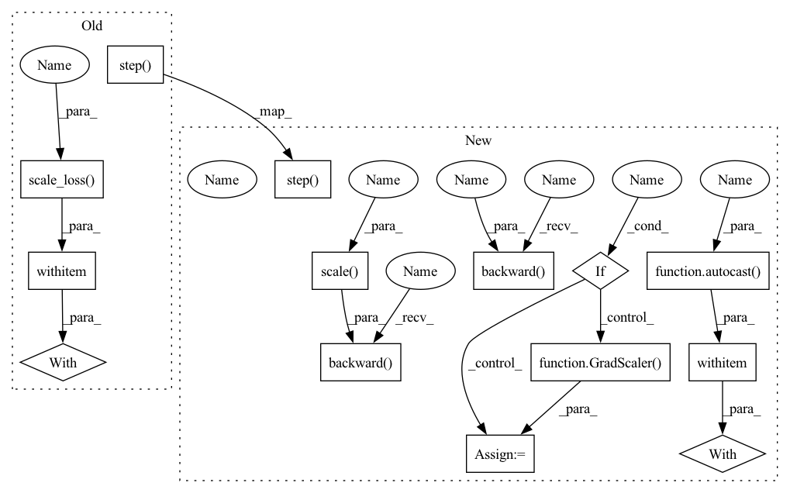

Pattern ID :37052
Before Change
if is_mixed_precision:
// 2/3 & 3/3 of mixed precision training with amp
with amp.scale_loss( loss, optimizer) as scaled_loss:
scaled_loss.backward()
else:
loss.backward()
optimizer.step()
if lr_scheduler is not None:
lr_scheduler.step()
// EMA updateAfter Change
if val_num_steps is None:
val_num_steps = len(train_loader)
if is_mixed_precision :
scaler = GradScaler()
net.train()
// Use EMA to report final performance instead of select best checkpoint with valtiny
ema = EMA(net=net, decay=decay)
epoch = 0
// Training
running_loss = 0.0
while epoch < num_epochs:
train_correct = 0
train_all = 0
time_now = time.time()
for i, data in enumerate(train_loader, 0):
inputs, labels = data
inputs = inputs.to(device)
labels = labels.to(device)
optimizer.zero_grad()
train_all += labels.shape[0]
// mixup data within the batch
if alpha is not None:
inputs, labels_a, labels_b, lam = mixup_data(x=inputs, y=labels, alpha=alpha)
with autocast (is_mixed_precision):
outputs = net(inputs)
if alpha is not None:
// Pseudo training accuracy & interesting loss
loss = mixup_criterion(criterion, outputs, labels_a, labels_b, lam)
predicted = outputs.argmax(1)
train_correct += (lam * (predicted == labels_a).sum().float().item()
+ (1 - lam) * (predicted == labels_b).sum().float().item())
else:
train_correct += (labels == outputs.argmax(1)).sum().item()
loss = criterion(outputs, labels)
if is_mixed_precision:
accelerator.backward( scaler.scale(loss ))
scaler.step(optimizer)
scaler.update()
else:
accelerator.backward(loss )
optimizer.step()
if lr_scheduler is not None:
lr_scheduler.step()
// EMA updateIn pattern: SUPERPATTERN
Frequency: 3
Non-data size: 14
Instances Fragment ID: 105517608
Project Name: voldemortx/dst-cbc
Commit Name: 6011a78ca028c58259d0181a11905e1d258ff7b9
Time: 2021-06-06
Author: zyfeng97@outlook.com
File Name: classification/main_fs.py
M Class Name: AnonimousClass
N Class Name: AnonimousClass
M Method Name: train(17)
N Method Name: train(17)
M Parent Class:
N Parent Class:
M File Name: classification/main_fs.py
N File Name: classification/main_fs.py
M Start Line: 115
M End Line: 133
N Start Line: 92
N End Line: 138
Before Change
if is_mixed_precision:
// 2/3 & 3/3 of mixed precision training with amp
with amp.scale_loss( loss, optimizer) as scaled_loss:
scaled_loss.backward()
else:
loss.backward()
optimizer.step()
lr_scheduler.step()
// Logging
for key in stats.keys():After Change
if with_sup:
iter_sup = iter(loader_sup)
if is_mixed_precision :
scaler = GradScaler()
// Training
running_stats = {"disagree": -1, "current_win": -1, "avg_weights": 1.0, "loss": 0.0}
while epoch < num_epochs:
conf_mat = ConfusionMatrix(num_classes)
time_now = time.time()
for i, data in enumerate(loader_c, 0):
// Combine loaders (maybe just alternate training will work)
if with_sup:
inputs_c, labels_c = data
inputs_sup, labels_sup = next(iter_sup, (0, 0))
if type(inputs_sup) == type(labels_sup) == int:
iter_sup = iter(loader_sup)
inputs_sup, labels_sup = next(iter_sup, (0, 0))
// Formatting (prob: label + max confidence, label: just label)
float_labels_sup = labels_sup.clone().float().unsqueeze(1)
probs_sup = torch.cat([float_labels_sup, torch.ones_like(float_labels_sup)], dim=1)
probs_c = labels_c.clone()
labels_c = labels_c[:, 0, :, :].long()
// Concatenating
inputs = torch.cat([inputs_c, inputs_sup])
labels = torch.cat([labels_c, labels_sup])
probs = torch.cat([probs_c, probs_sup])
probs = probs.to(device)
else:
inputs, labels = data
// Normal training
inputs = inputs.to(device)
labels = labels.to(device)
optimizer.zero_grad()
with autocast (is_mixed_precision):
outputs = net(inputs)["out"]
outputs = torch.nn.functional.interpolate(outputs, size=input_sizes[0], mode="bilinear", align_corners=True)
conf_mat.update(labels.flatten(), outputs.argmax(1).flatten())
if with_sup:
loss, stats = criterion(outputs, probs, inputs_c.shape[0])
else:
loss, stats = criterion(outputs, labels)
if is_mixed_precision:
accelerator.backward( scaler.scale( loss))
scaler.step(optimizer)
scaler.update()
else:
accelerator.backward( loss)
optimizer.step()
lr_scheduler.step()
// Logging Fragment ID: 105517606
Project Name: voldemortx/dst-cbc
Commit Name: 6011a78ca028c58259d0181a11905e1d258ff7b9
Time: 2021-06-06
Author: zyfeng97@outlook.com
File Name: segmentation/main.py
M Class Name: AnonimousClass
N Class Name: AnonimousClass
M Method Name: train(19)
N Method Name: train(19)
M Parent Class:
N Parent Class:
M File Name: segmentation/main.py
N File Name: segmentation/main.py
M Start Line: 205
M End Line: 220
N Start Line: 173
N End Line: 227
Before Change
if is_mixed_precision:
// 2/3 & 3/3 of mixed precision training with amp
with amp.scale_loss( loss, optimizer) as scaled_loss:
scaled_loss.backward()
else:
loss.backward()
optimizer.step()
criterion.step()
if lr_scheduler is not None:
lr_scheduler.step()
After Change
if val_num_steps is None:
val_num_steps = min_len
if is_mixed_precision :
scaler = GradScaler()
net.train()
// Use EMA to report final performance instead of select best checkpoint with valtiny
ema = EMA(net=net, decay=decay)
epoch = 0
// Training
running_loss = 0.0
running_stats = {"disagree": -1, "current_win": -1, "avg_weights": 1.0, "gamma1": 0, "gamma2": 0}
iter_labeled = iter(labeled_loader)
while epoch < num_epochs:
train_correct = 0
train_all = 0
time_now = time.time()
for i, data in enumerate(pseudo_labeled_loader, 0):
// Pseudo labeled data
inputs_pseudo, labels_pseudo = data
inputs_pseudo, labels_pseudo = inputs_pseudo.to(device), labels_pseudo.to(device)
// Hard labels
probs_pseudo = labels_pseudo.clone().detach()
labels_pseudo = labels_pseudo.argmax(-1) // data type?
// Labeled data
inputs_labeled, labels_labeled = next(iter_labeled, (0, 0))
if type(inputs_labeled) == type(labels_labeled) == int:
iter_labeled = iter(labeled_loader)
inputs_labeled, labels_labeled = next(iter_labeled, (0, 0))
inputs_labeled, labels_labeled = inputs_labeled.to(device), labels_labeled.to(device)
// To probabilities (in fact, just one-hot)
probs_labeled = torch.nn.functional.one_hot(labels_labeled.clone().detach(), num_classes=num_classes) \
.float()
// Combine
inputs = torch.cat([inputs_pseudo, inputs_labeled])
labels = torch.cat([labels_pseudo, labels_labeled])
probs = torch.cat([probs_pseudo, probs_labeled])
optimizer.zero_grad()
train_all += labels.shape[0]
// mixup data within the batch
if alpha != -1:
dynamic_weights, stats = criterion.dynamic_weights_calc(
net=net, inputs=inputs, targets=probs,
split_index=inputs_pseudo.shape[0], labeled_weight=labeled_weight)
inputs, dynamic_weights, labels_a, labels_b, lam = mixup_data(x=inputs, w=dynamic_weights, y=labels,
alpha=alpha, keep_max=True)
with autocast (is_mixed_precision):
outputs = net(inputs)
if alpha != -1:
// Pseudo training accuracy & interesting loss
predicted = outputs.argmax(1)
train_correct += (lam * (predicted == labels_a).sum().float().item()
+ (1 - lam) * (predicted == labels_b).sum().float().item())
loss, true_loss = criterion(pred=outputs, y_a=labels_a, y_b=labels_b, lam=lam,
dynamic_weights=dynamic_weights)
else:
train_correct += (labels == outputs.argmax(1)).sum().item()
loss, true_loss, stats = criterion(inputs=outputs, targets=probs, split_index=inputs_pseudo.shape[0],
gamma1=gamma1, gamma2=gamma2)
if is_mixed_precision:
accelerator.backward( scaler.scale( loss))
scaler.step(optimizer)
scaler.update()
else:
accelerator.backward( loss)
optimizer.step()
criterion.step()
if lr_scheduler is not None:
lr_scheduler.step()
Fragment ID: 105517607
Project Name: voldemortx/dst-cbc
Commit Name: 6011a78ca028c58259d0181a11905e1d258ff7b9
Time: 2021-06-06
Author: zyfeng97@outlook.com
File Name: classification/main_dmt.py
M Class Name: AnonimousClass
N Class Name: AnonimousClass
M Method Name: train(23)
N Method Name: train(23)
M Parent Class:
N Parent Class:
M File Name: classification/main_dmt.py
N File Name: classification/main_dmt.py
M Start Line: 206
M End Line: 226
N Start Line: 161
N End Line: 234